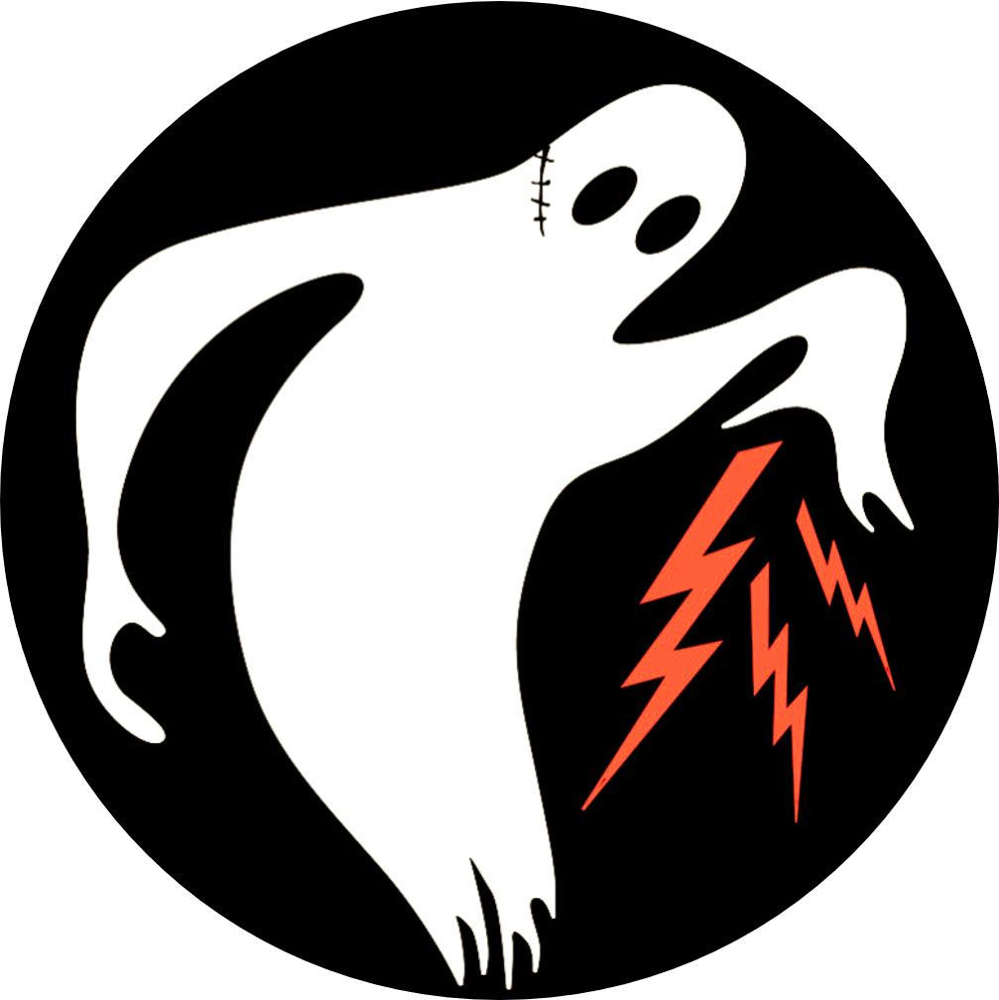

El Ejército Fantasma fue una unidad del Ejército de los EEUU oficialmente conocida como 23rd Headquarters Special Troops. Esta unidad contaba con 1.100 hombres a los que se les dio una orden muy peculiar: hacerse pasar por otras unidades del Ejército de los EEUU para engañar al enemigo durante las semanas previas al inicio de la invasión aliada de la Francia ocupada.
